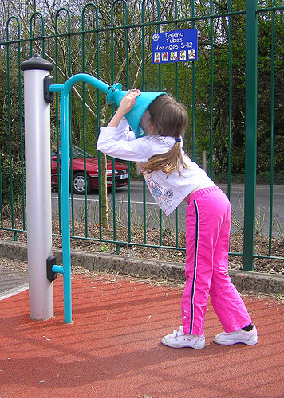
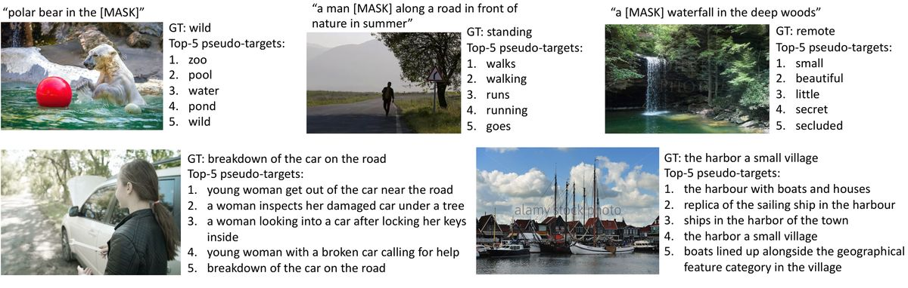
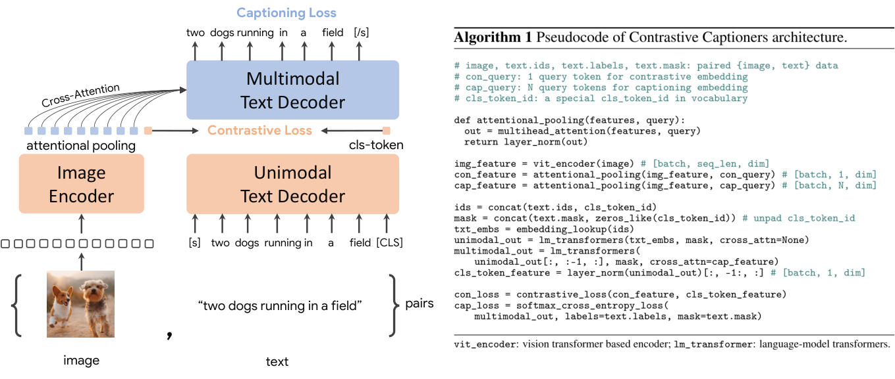
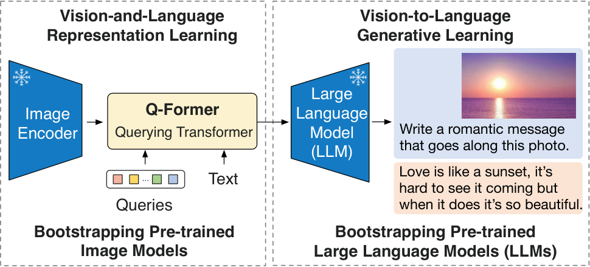

第 10 章 多模态表示学习
💡 本章导读
五大挑战的第一层是表示：在融合、转换发生之前，图像与文本必须先被编码成"能算"的向量。本章把 90 年的表示学习史压缩成一条主线——如何让两个模态的表示在几何上可比：CCA 给出统计学的最优解（广义特征值问题），DeViSE/VSE/VSE++ 给出深度学习的排序损失解法（含 hard negative 的完整推导），CLIP 把它放大到 4 亿数据上并加入可学习温度。本章最后讨论两个被多数教程忽略但对实践致命的问题：冻结还是联合训练（第 5 节，直接决定你的微调实验成败）与 modality gap（第 7 节，理解对比表示为什么"对齐但不重合"）。全章 6 段代码构成一条完整实验线：从 CCA 到可训练的双塔，再到检索评测与 gap 度量。
1.表示学习的问题设定：联合表示 vs 协调表示
形式化一下。给定配对数据 $\{(x_i^A, x_i^B)\}_{i=1}^N$（$A$=图像，$B$=文本），表示学习要找编码器 $f_A: \mathcal{X}_A \to \mathbb{R}^{d}$ 与 $f_B: \mathcal{X}_B \to \mathbb{R}^{d'}$，使得下游任务能在这个表示空间上"跨模态地"操作。根据两个表示空间的关系，所有方法落入两大族：
联合表示（Joint Representation）：把两个模态投影到同一个空间 $\mathbf{z} = g(f_A(x^A), f_B(x^B)) \in \mathbb{R}^{d}$，距离与后续计算都在这个共享空间里进行。极端形态是"融合表示"——直接把两种模态拼在一起过一个网络（如单流 VLP 模型）；但更常用的定义是双塔到共享空间：CLIP 把图像和文本都映射到同一个 512 维空间，用内积比较。优点：模态间直接可比、检索类任务零成本；缺点：空间容量被两模态争抢，单模态任务常需再微调。
协调表示（Coordinated Representation）：每个模态保留各自的空间，用一组约束（相似性保持、排序、正则）把两个空间"拴"在一起，比如要求图像特征与对应词向量满足 $f_A(x^A)^\top \mathbf{W} f_B(x^B)$ 的打分关系——中间的 $\mathbf{W}$ 就是两个空间的"翻译词典"（CCA、DeViSE 都属于这一族）。优点：每个模态的空间按自身任务优化、表达更自然；缺点：跨模态计算必须经过映射，端到端优化两个空间+映射更难稳定。
| 维度 | 联合表示 | 协调表示 |
|---|---|---|
| 空间结构 | 单一共享空间（常归一化到超球面） | 两个独立空间 + 映射/约束 |
| 跨模态比较 | 直接内积/余弦，检索可建索引 | 需先做线性映射或经打分函数 |
| 单模态性能 | 可能被"挤占"（空间容量竞争） | 各空间自由演化，单模态任务友好 |
| 代表方法 | VSE/VSE++、CLIP、SigLIP、E5-V | CCA、深度 CCA、DeViSE、word2vec+CNN 早期组合 |
| 典型失败模式 | 模态差距、组合性差（bag-of-words 行为） | 映射学习不稳定、两空间尺度漂移 |
| 现代用法 | MLLM 的视觉塔与检索底座的事实标准 | 思想已内化为"投影层+打分头"，独立方法少见 |
一个常见的误解值得澄清：联合/协调不是"新旧"之分，而是几何约束的强弱之分。联合表示把"可比性"硬编码进空间定义（任何两个向量都能比），协调表示只约束配对样本的相对关系。CLIP 之所以选择联合，是因为它的目标场景（开放词汇检索与零样本分类）要求"任何图像 vs 任何文本"都可比较；而 DeViSE 时代的目标只是零样本识别（图像 vs 已知类别词向量），协调已足够。2023 年后的 E5-V、VLM2Vec 等工作（第 42 章）则尝试让 LLM 的文本表示直接充当联合空间——表示学习的历史仍在继续。
2.经典方法：CCA、多核学习与深度 CCA
在深度学习之前，"让两组变量可比"的统计学标准答案是 Hotelling 1936 年提出的典型相关分析（Canonical Correlation Analysis, CCA）。它的目标表述极其干净：找投影方向 $\mathbf{w}_x, \mathbf{w}_y$，使两组变量的线性组合 $u = \mathbf{w}_x^\top \mathbf{x}$ 与 $v = \mathbf{w}_y^\top \mathbf{y}$ 的相关系数最大——这正是"联合空间"思想的线性版本。
📐 理论推导：CCA 的广义特征值解
设定：$\mathbf{X} \in \mathbb{R}^{n\times p}$、$\mathbf{Y} \in \mathbb{R}^{n\times q}$ 已中心化，样本协方差 $\Sigma_{xx} = \frac{1}{n}\mathbf{X}^\top\mathbf{X}$、$\Sigma_{yy} = \frac{1}{n}\mathbf{Y}^\top\mathbf{Y}$、互协方差 $\Sigma_{xy} = \frac{1}{n}\mathbf{X}^\top\mathbf{Y}$。目标：
第一步：固定尺度。相关系数对 $\mathbf{w}$ 的整体缩放不变，为去掉这个无害的自由度，约束 $\mathbf{w}_x^\top\Sigma_{xx}\mathbf{w}_x = 1$、$\mathbf{w}_y^\top\Sigma_{yy}\mathbf{w}_y = 1$（"白化后的单位范数"）。目标简化为最大化分子 $\mathbf{w}_x^\top\Sigma_{xy}\mathbf{w}_y$。
第二步：拉格朗日乘子。构造
分别对 $\mathbf{w}_x, \mathbf{w}_y$ 求导置零：
第三步：证明 $\lambda = \mu = \rho$。第一式左乘 $\mathbf{w}_x^\top$、第二式左乘 $\mathbf{w}_y^\top$，利用约束得 $\mathbf{w}_x^\top\Sigma_{xy}\mathbf{w}_y = \lambda = \mu$，而它正是目标 $\rho$——最大相关系数直接以特征值身份出现。
第四步：消元成广义特征值问题。由第二式 $\mathbf{w}_y = \frac{1}{\lambda}\Sigma_{yy}^{-1}\Sigma_{yx}\mathbf{w}_x$（设协方差可逆），代入第一式：
这是标准的广义特征值问题：前 $\min(p,q)$ 个特征对给出全部典型方向，特征值 $\lambda_k^2$ 即第 $k$ 对典型变量的相关系数平方。两个实用性质：（1）白化视角——把 $\mathbf{X},\mathbf{Y}$ 各自白化后，CCA 退化为对交叉协方差矩阵做 SVD，这解释了它与第 1 章 SVD 的血缘；（2）线性不变性——对任一模态做可逆线性变换不改变解的相关性，所以 CCA 度量的是"统计相关结构"而非具体坐标。深度 CCA（DCCA）：把两个线性投影换成深度网络 $f_\theta, g_\phi$，目标函数不变（最大化输出相关性），用 SGD 优化——它是 2015 年前后音视频共享表示的主力方法，也是今天"双塔+对比损失"的直系祖先。$\blacksquare$
多核学习（Multiple Kernel Learning, MKL）从另一个角度处理异质性：给每种模态（或每种特征）配一个核函数 $\kappa_m$，学一个组合核 $\kappa = \sum_m \beta_m \kappa_m$（权重 $\beta_m \ge 0$，常加 $\sum\beta_m = 1$ 约束），用 SDP 或简化梯度法求解（Lanckriet et al., JMLR 2004；Bach et al., JMLR 2004）。MKL 在 2000 年代的音视频分类、跨语言检索中广泛使用，它教会社区两件沿用至今的事：（1）融合可以发生在核/相似度层面而不必在特征层面——这正是"晚期融合"（第 13 章）的思想雏形；（2）为不同模态学习"各自的空间 + 组合权重"，本质上就是协调表示。核方法随 GPU 深度学习的兴起而退场，但当你需要在小数据上融合多个预训练嵌入（如多个 CLIP 变体的相似度分数）时，"学一个分数组合"依然是 MKL 思想的零成本版本。
代码 1：用 scikit-learn 体验 CCA——先造一个"共享隐变量"的合成数据，看 CCA 能否把它找回来：
import numpy as np
from sklearn.cross_decomposition import CCA
rng = np.random.default_rng(0)
n = 500
# 隐变量 z = "场景复杂度"：视觉侧与文本侧都由它驱动 + 各自噪声
z = rng.normal(size=n)
X = np.stack([z + 0.5 * rng.normal(size=n), # 视觉特征 1：亮度变化
0.7 * z + 0.5 * rng.normal(size=n)], axis=1) # 视觉特征 2：轮廓密度
Y = np.stack([0.8 * z + rng.normal(size=n), # 文本特征 1：名词词频
-0.6 * z + rng.normal(size=n)], axis=1) # 文本特征 2：平均词长（负相关）
cca = CCA(n_components=2, max_iter=1000)
Xc, Yc = cca.fit_transform(X, Y) # Xc[:, k] = X @ w_xk，Yc[:, k] = Y @ w_yk
for k in range(2):
r = np.corrcoef(Xc[:, k], Yc[:, k])[0, 1]
print(f"典型变量对 {k}: 相关系数 = {r:.3f}")
print("视觉侧投影方向:", cca.x_weights_.ravel().round(3))
print("文本侧投影方向:", cca.y_weights_.ravel().round(3))
# 预期：第 1 对典型变量相关系数显著高于第 2 对 —— CCA 找到了共享隐变量 z 的方向CCA 的局限同样具有教育意义：它最大化线性相关，而语义相关高度非线性；它优化的是"相关性"而非"区分性"，学出的方向可能被模态内的主成分（如亮度）支配。深度时代用两件事补救：把投影换成深度网络（DCCA），把目标换成对判别更锋利的排序/对比损失——这正是下一节的主角。
3.视觉语义嵌入：DeViSE、VSE 与 VSE++ 的排序损失推导
深度 CCA 优化"相关性"，但视觉语义嵌入（Visual-Semantic Embedding, VSE）一系选择了一条对判别任务更锋利的路线：排序损失（Ranking / Margin Loss）——不关心分数绝对值，只要求"正确配对的分数比错误配对高出一个间隔"。这一节按时间线推导三个里程碑，它们的差异全部浓缩在"负样本怎么选"上。
🕰 历史一刻：2013 年，DeViSE 把视觉"扔进"词向量空间
Frome 等人的 DeViSE（NIPS 2013，"A Deep Visual-Semantic Embedding Model"）的动机来自零样本学习：ImageNet 有 2 万多类，标注图像永远追不上类别增长，但语义空间里类别是相连的。做法分两步：先分别预训练好 CNN（视觉侧）与 word2vec（语义侧）；再用一个线性映射 $\mathbf{W}$ 把 1000 类监督学出的视觉特征投进词向量空间，损失是铰链排序：
其中 $[z]_+ = \max(0, z)$，$\theta(v, l) = v^\top \mathbf{W} l$，$\Delta$ 用语义距离给不同负类加权（越相似的负类惩罚越重）。测试时对从未见过的类别：把图像嵌入与所有候选类词向量算分、取最大者——零样本识别就此成立。DeViSE 的两个遗产定义了此后十年："预训练两个塔 + 轻量对齐"的三明治训练法，与"语义空间可以外推到没见过的类"的零样本哲学（后者在 2021 年被 CLIP 以 prompt 形式发扬光大）。
VSE：结构化区域对齐（Karpathy & Fei-Fei, arXiv:1412.2306，CVPR 2015）。DeViSE 只对齐"整图 ↔ 类别词"，粒度太粗。Karpathy 与 Fei-Fei 把对齐下沉到区域 ↔ 片段：用双向 LSTM 找出句子中每个词最对应的图像区域（BRNN 打分），再在区域-词对应关系上训练双向检索。损失推广为 batch 内逐对求和的双向铰链——设 batch 内有 $N$ 对配对样本 $(v_i, t_i)$，相似度 $s(v, t)$：
$\alpha$ 是间隔超参数（典型 0.2，配合相似度归一化）。这个"双向 + 逐对"模板成为此后几乎所有检索模型的默认损失形态。
VSE++：最难负样本（Faghri et al., arXiv:1707.05612，BMVC 2018）。逐对求和有一个被忽视的病灶：梯度被大量"轻微违反"的简单负样本稀释，而真正会造成错误检索的困难负样本（语义相近的配对，如"狗追球" vs "狗叼球"）只贡献一份梯度。VSE++ 的改动只有一行——把"对所有负样本求和"换成"只取相似度最高的那个负样本"：
📐 理论推导：为什么"最难负样本"更好——梯度与有效间隔两个视角
视角一：梯度分配。记铰链项 $h_j = [\alpha - s_{ii} + s_{ij}]_+$（$s_{ij} = s(v_i, t_j)$）。逐对求和损失对正样本分数 $s_{ii}$ 的梯度是
即每个违反间隔的负样本平权地推一把：训练中期，随机负样本几乎全都轻微违反（$s_{ij}$ 与 $s_{ii}$ 相差不大），梯度被上百个"反正也不会检索错"的简单负样本瓜分；语义最近、真正决定排序质量的困难负样本只占其中一份，权重被稀释。换成 max 形式后，由链式法则（max 的次梯度只指向取到最大值的那个 $j^* = \arg\max_j s_{ij}$）：
全部梯度预算集中在单个最危险负样本上——模型每次更新都在回答"目前最容易混淆的那一对，分开没有"，等价的间隔压力向困难样本集中。实证上这表现为：训练后期简单负样本的分数不再被继续推远（损失已饱和），而困难负样本对的间隔持续扩大。
视角二：有效间隔。把 max 损失改写为约束形式：它等价于要求 $s_{ii} \ge s_{ij} + \alpha$ 对所有 $j$ 成立，但优化时只对当前最紧的约束施加压力。若用"软最大"（softmax 加权所有负样本，温度 $\tau$）就平滑过渡到 InfoNCE——排序损失与对比损失是同一目标的两端：硬选择 vs 软加权。这也预告了温度参数的作用（第 12 章）：$\tau \to$ 小时 softmax 集中于最难负样本，行为逼近 VSE++；$\tau \to$ 大时退回均匀对待所有负样本的 VSE。
工程注脚：全库最难负样本不可枚举，实践用 batch 内最难近似——这直接把"batch size"变成了模型质量变量：batch 越大，最相近的负样本越可能出现，VSE++ 论文明确报告小 batch 会显著削弱收益。CLIP 的 32768 超大 batch 与之同源。$\blacksquare$

代码 2：两种损失的数值对比——自己构造相似度矩阵，观察梯度分配的差异：
import torch
def vse_pairwise_loss(sim, margin=0.2):
"""VSE：双向 + 对所有 batch 内负样本求和"""
n = sim.size(0)
diag = sim.diag().unsqueeze(1) # [n,1]：每个锚点的正样本分
cost_img = (margin - diag + sim).clamp(min=0) # 图锚点 vs 所有句子
cost_txt = (margin - diag.t() + sim.t()).clamp(min=0)
eye = torch.eye(n, dtype=torch.bool, device=sim.device)
return cost_img.masked_select(~eye).mean() + cost_txt.masked_select(~eye).mean()
def vsepp_hardest_loss(sim, margin=0.2):
"""VSE++：双向，但每个锚点只取 batch 内最难负样本"""
n = sim.size(0)
eye = torch.eye(n, dtype=torch.bool, device=sim.device)
diag = sim.diag()
hard_img = sim.masked_fill(eye, -1e4).max(dim=1).values # 每张图最难负句
hard_txt = sim.masked_fill(eye, -1e4).max(dim=0).values # 每句最难负图
return (margin - diag + hard_img).clamp(min=0).mean() \
+ (margin - diag + hard_txt).clamp(min=0).mean()
torch.manual_seed(0)
# 模拟训练中期：正样本分 ~2，负样本分 ~0.5（多数违反间隔，但互不相似）
sim = torch.randn(16, 16) * 0.4 + 0.5
sim.fill_diagonal_(2.0)
for name, fn in [("VSE 逐对求和", vse_pairwise_loss), ("VSE++ 最难负样本", vsepp_hardest_loss)]:
s = sim.clone().requires_grad_(True)
loss = fn(s)
loss.backward()
pos_grad = s.grad.diag().mean().item() # 正样本收到的平均梯度强度
print(f"{name}: loss={loss.item():.3f} 正样本梯度={pos_grad:.3f}")
# 结论要点：VSE++ 的总损失更小但正样本梯度不为零——优化预算集中在对角线与第一名负样本之间；
# 把 batch 从 16 调到 4 再跑一次，VSE++ 的优势会明显缩小（batch 内难负样本变少）4.双塔 vs 单塔：架构谱系与选型
有了表示与损失，剩下的架构问题是：两个模态应该在哪里"见面"？双塔（dual-encoder / bi-encoder）把见面推迟到最后一次内积（late interaction）；单塔（single-encoder）把见面提前到 Transformer 内部的每一层注意力（early/deep interaction）。二者之间还生长出双塔+融合编码器（ALBEF/BLIP）与"双塔召回 + 单塔重排"的级联形态。这条谱系是理解第 11–13 章所有模型架构争论的地图。
| 形态 | 交互位置 | 代表模型 | 查询-库匹配成本 | 强项 | 弱项 |
|---|---|---|---|---|---|
| 双塔（晚交互） | 最终向量内积 | DeViSE、VSE/VSE++、CLIP、SigLIP | 库向量离线预计算；查询一次前向 + ANN 检索 | 规模、延迟、零样本 | 无 token 级交互，细粒度差 |
| 多向量晚交互 | token 级最大相似度和 | ColBERT、ColPali | 库存多向量；查询一次前向 + 每查询 token 扫描 | 细粒度且可检索 | 索引体积大数倍 |
| 单塔（深交互） | 每层自注意力 | UNITER、OSCAR、VinVL | 每个（查询，候选）对一次完整前向 | 判别精度、推理 | 无法预计算、O(N) 不可扩展 |
| 双塔+融合塔 | 先对比对齐，后融合精读 | ALBEF、BLIP | 双塔召回 + 少量候选过融合塔 | 兼顾两侧 | 两套目标需配平 |
| 生成式融合 | 视觉 token 进入 LLM 序列 | BLIP-2、LLaVA、Qwen-VL | 生成式，天然不做库级检索 | 开放对话与推理 | 成本高、需指令数据 |
选型的三条经验法则：（1）库大小决定形态——候选超过约 $10^4$ 就必须用（至少召回阶段用）双塔；（2）精度差距看细粒度需求——CLIP 式全局向量在"长句细节差异"上显著弱于 cross-encoder，重排一步通常能再涨 5–15 个点；（3）生成任务没有选择——凡是输出是自由文本（描述、对话）的任务，深交互/生成式融合是唯一解，双塔只能做前置过滤。这三条法则到第 42 章的多模态 RAG 与第 15 章的连接器选型中都会反复出现。
5.冻结 vs 联合训练：梯度视角的决策框架
架构定了、损失定了，最后一个训练层决策是：哪些参数参与更新？这个问题在 2013 年就有答案雏形（DeViSE 冻结两个预训练塔只训映射），但直到 LLaVA/BLIP-2 时代才被系统化为"对齐预训练的标准打法"。先把策略谱系摆出来：
| 策略 | 可训参数 | 代表工作 | 适用场景 | 主要风险 |
|---|---|---|---|---|
| 双塔全冻结 | 仅映射/打分头（<1% 参数） | DeViSE（2013）、LLaVA 阶段 1、BLIP-2 阶段 1 | 小数据（<百万对）建立初步对齐；预算极紧 | 上限被冻结塔的表示质量锁死 |
| 冻结视觉塔 | 文本塔 + 融合/LLM | Flamingo、BLIP-2 阶段 2、LLaVA-1.5 | 视觉预训练好而语言任务重（对话、推理） | 分辨率/域差距无法适配（文档、医疗影像） |
| 冻结文本/LLM | 视觉塔 + 连接器 | 部分早期 VLP、蒸馏型小模型 | 保护语言能力不被破坏（指令跟随、知识） | 视觉 token 的"方言"LLM 学不到，答非所问 |
| 全联合（端到端） | 全部参数 | CLIP 从头训练、VSE++ finetune、ALBEF、Qwen-VL 二阶段 | 数据充足（百万级以上）+ 域差距大 | 小数据下灾难性遗忘、对齐崩坏 |
| 渐进解冻 | 分阶段扩大 | InternVL 渐进对齐、多数 MLLM 两阶段配方 | 工程默认：先稳后动 | 阶段切换的学习率/数据配比敏感 |
用梯度的语言总结这张表的逻辑：冻结的本质是用零梯度保护先验。预训练塔的参数是几十亿 token/图文对蒸馏出的先验，若下游数据只有几十万对、且任务只是"把两个空间对上"，让全部参数自由移动的期望损失（先验破坏）远大于收益（表示适配）。随着数据规模与任务复杂度上升，收益端变化不大而损失端递减，最优策略从"全冻结"滑向"全联合"——这就是为什么 VSE++ 时代 finetune 全塔是标配（数据百万级），而 LLaVA 时代先冻结后渐进（指令数据百万级但要保护对话能力）。另一个实用观察来自 ALBEF 的"align before fuse"：先把双塔对齐好再上融合模块，融合层的训练会显著更稳——如果上来就端到端深融合，视觉特征仍在漂移，融合注意力学到的对应关系会反复作废。
顺带一提"协同"视角的证据：对齐好的双塔表示能捕获文本里根本没写出来的视觉概念。ALBEF 论文的可视化显示，对比学习为 MLM/ITC 提供的"伪目标"能指向文本未描述的物体——这正是"用富模态教贫模态"的协同学习在表示层的体现，也是冻结 CLIP 特征能在许多判别任务上做线性探针仍然好用的原因。

⚠️ 陷阱：冻结/联合训练的三个经典翻车点
（1）小数据全解冻：50 万图文对端到端训 CLIP 式双塔，检索分数反而低于"冻结+训投影"——视觉塔被拉去拟合 batch 内对比噪声，预训练对齐被破坏。判断标准：冻结版能拿到的分数与全量版差距小于 2 个点时，别解冻。（2）学习率不分层：解冻后给所有模块同一个大学习率（如 2e-4），预训练塔几个 step 内被"洗掉"。配方：塔 5e-6～2e-5、新加模块 1e-4～5e-4，分层学习率是默认动作（见代码 4）。（3）冻结的塔与下游域失配：拿 ImageNet/自然图像预训练的 CLIP 塔+冻结去训练医疗影像报告生成，分数长期不动——先检查表示质量（线性探针或检索探针，第 8 节），塔不行就先做域内对比继续预训练，再谈对齐。
6.CLIP 双塔最小实现：从模型到训练循环
CLIP（arXiv:2103.00020）是本章所有思想的集大成者：联合表示（共享 512/768 维空间）、对称 InfoNCE（"软化的 VSE++"，对所有负样本按温度加权）、可学习温度（初始化 0.07、截断在下限 0.01）、超大 batch（32768，让 batch 内难负样本足够多）、图文双塔各自可独立使用。完整剖析留待第 12 章，这里给出最小但结构完整的实现——你可以在自己的小数据上以小时级成本复现"双塔对齐"的全流程。关于目标，先记住一个关键差异：CoCa（arXiv:2205.01917）随后证明对比目标与生成式字幕目标可以解耦共存（单模态塔做对比、级联解码器做生成），这为第 11–12 章 ALBEF/BLIP 系的"对比+生成"配方提供了统一视角。

代码 3：双塔模型——两个预训练骨干 + 两个投影头 + CLIP 同款可学习温度（注意温度存的是 $\log(1/\tau)$，这是所有开源实现的惯例）：
import math
import torch
import torch.nn as nn
import torch.nn.functional as F
from transformers import AutoModel, ViTModel
class DualEncoder(nn.Module):
"""CLIP 式双塔最小实现：骨干可选冻结 + 投影头 + 可学习温度"""
def __init__(self, d_vision=768, d_text=768, d_embed=256, freeze_vision=False):
super().__init__()
self.vision = ViTModel.from_pretrained("google/vit-base-patch16-224")
self.text = AutoModel.from_pretrained("bert-base-uncased")
if freeze_vision: # 第 5 节策略：小数据先冻结视觉塔
for p in self.vision.parameters():
p.requires_grad_(False)
self.v_proj = nn.Sequential(nn.Linear(d_vision, d_embed), nn.GELU(),
nn.Linear(d_embed, d_embed))
self.t_proj = nn.Sequential(nn.Linear(d_text, d_embed), nn.GELU(),
nn.Linear(d_embed, d_embed))
# CLIP 同款：存 log(1/τ)，初始化 τ=0.07；推理/训练时 exp 后截断 ≤100
self.logit_scale = nn.Parameter(torch.tensor(math.log(1 / 0.07)))
def encode_image(self, pixel_values):
feats = self.vision(pixel_values=pixel_values).pooler_output # [B, 768]
return F.normalize(self.v_proj(feats), dim=-1) # 单位超球面
def encode_text(self, input_ids, attention_mask):
feats = self.text(input_ids=input_ids, attention_mask=attention_mask).pooler_output
return F.normalize(self.t_proj(feats), dim=-1)代码 4：对称 InfoNCE 训练步——双向交叉熵 + 梯度裁剪 + 分层学习率，缺一不可：
def clip_infonce(model, batch):
v = model.encode_image(batch["pixel_values"]) # [B, d]
t = model.encode_text(batch["input_ids"], batch["attention_mask"])
scale = model.logit_scale.clamp(max=math.log(100.0)).exp() # τ 下限 0.01（CLIP 技巧）
logits = scale * v @ t.t() # [B, B]，对角线为正样本
labels = torch.arange(logits.size(0), device=logits.device)
# 对称损失：图→文 与 文→图 两个方向的 InfoNCE 各占一半
return 0.5 * (F.cross_entropy(logits, labels) + F.cross_entropy(logits.t(), labels))
model = DualEncoder(freeze_vision=True).cuda()
# 分层学习率：预训练塔小、新模块大——冻结/联合训练的折中形态
optimizer = torch.optim.AdamW([
{"params": model.text.parameters(), "lr": 2e-5},
{"params": model.v_proj.parameters(), "lr": 1e-4},
{"params": model.t_proj.parameters(), "lr": 1e-4},
{"params": [model.logit_scale], "lr": 1e-4},
], weight_decay=0.1)
# for epoch in range(epochs):
# for batch in loader: # batch["pixel_values"]: [B,3,224,224]
# loss = clip_infonce(model, batch)
# loss.backward()
# torch.nn.utils.clip_grad_norm_(model.parameters(), 1.0) # 梯度裁剪防温度爆炸
# optimizer.step(); optimizer.zero_grad()
print(sum(p.numel() for p in model.parameters() if p.requires_grad) / 1e6, "M 可训练参数")🍳 实战配方：小数据训练双塔的可复现起点
数据：10 万–100 万图文对（如 CC3M 子集或自有领域数据），图像短边 224。模型：冻结 ViT-B/16 + BERT-base，投影 256 维、两层 MLP。优化：AdamW（β2=0.98），分层学习率见代码 4，warmup 1000 步后余弦衰减，bf16 混合精度，梯度裁剪 1.0。batch：能开多大开多大（≥256 显著受益于批内难负样本；不够就用梯度累积外的跨卡 gather——即"全局 batch 内对比"，第 38 章）。温度：初始化 0.07 并 clamp，训练初期若 loss 陡升先查温度与梯度裁剪。验收：held-out 检索 R@1 相对随机基线（1/N）提升两个数量级、相似度矩阵出现清晰对角线；再用第 7 节的 gap 指标确认两个模态没有"各说各话"。生产级实现直接用 OpenCLIP 的训练脚本，把本节作为读懂它的地图。
7.模态差距（Modality Gap）现象
把训练好的 CLIP 在一批图文对上跑一遍，画两张 t-SNE 图：你会发现图像嵌入和文本嵌入各自抱团，中间隔着明显的空隙——即便配对样本的相似度已经很高。这个现象被 Liang 等人系统研究并命名为 modality gap（《Mind the Gap: Understanding the Modality Gap in Multi-Modal Contrastive Representation Learning》，NeurIPS 2022，arXiv:2110.11330）：在 CLIP、ALBEF 等对比预训练模型的表示空间里，两个模态的点各自形成狭窄的锥形（cone effect），两个锥的质心之间隔着可测量的距离，且这个差距从训练早期就形成并持续存在。
为什么会对齐却不重合？三个原因的合力。（1）初始化：两个塔随机初始化，输出天然落在不同的窄锥里（深度网络的输出分布本就各向异性）；（2）均匀性压力：对比损失的均匀性项（第 12 章展开）把每个模态内部的点推得尽可能均匀分散，但它是模态内的力，不负责把两个锥拉到一起；（3）对齐只作用于配对样本：损失只要求"配对的更近"，从未要求"两个模态的分布重合"。三者叠加的结果是：配对样本的跨模态距离缩到足够小（排序正确所需），但两个模态的质心永不汇合。
对 MLLM 时代，modality gap 有一层新的重要性：LLM 的词嵌入分布与 CLIP 图像嵌入分布分属两族方言，连接器与对齐预训练的实质工作之一就是把视觉锥"翻译"进语言模型的残差流。BLIP-2 把这件事说得很直白——Q-Former 的两阶段预训练就是为了"弥合模态差距"（bridge the modality gap）而设计：

代码 5：亲手测量 modality gap——一段可以直接抄进实验笔记的诊断脚本：
import torch
import torch.nn.functional as F
@torch.no_grad()
def modality_gap_report(img_emb, txt_emb):
"""img_emb, txt_emb: [N, d] 单位向量。输出五项诊断指标"""
n, cos = img_emb.size(0), img_emb @ txt_emb.t()
eye = torch.eye(n, dtype=torch.bool, device=img_emb.device)
paired = cos.diag().mean().item() # 配对样本跨模态余弦（越高越好）
unpaired = ((cos.sum() - cos.diag().sum()) / (n * n - n)).item()
intra_v = ((img_emb @ img_emb.t()).masked_fill(eye, 0).sum() / (n * n - n)).item()
intra_t = ((txt_emb @ txt_emb.t()).masked_fill(eye, 0).sum() / (n * n - n)).item()
gap = 1 - F.cosine_similarity(img_emb.mean(0), txt_emb.mean(0), dim=0).item()
return {"配对跨模态cos": round(paired, 3), "非配对跨模态cos": round(unpaired, 3),
"图像模态内cos": round(intra_v, 3), "文本模态内cos": round(intra_t, 3),
"质心gap": round(gap, 3)}
@torch.no_grad()
def alignment_uniformity(img_emb, txt_emb, alpha=2, t=2):
"""Wang & Isola (ICML 2020) 的对比表示两个性质：
l_align 越小越对齐；l_uniform 越大（越负？注意实现里 log 平均高斯核，越小越均匀）"""
l_align = (img_emb - txt_emb).norm(dim=-1).pow(alpha).mean().item()
uniformity = lambda z: torch.pdist(z, p=2).pow(2).mul(-t).exp().mean().log().item()
return {"l_align": round(l_align, 3),
"l_uniform_vision": round(uniformity(img_emb), 3),
"l_uniform_text": round(uniformity(txt_emb), 3)}
# 用法：训练前后各跑一次
# emb_v = model.encode_image(val_batch["pixel_values"])
# emb_t = model.encode_text(val_batch["input_ids"], val_batch["attention_mask"])
# print(modality_gap_report(emb_v, emb_t)); print(alignment_uniformity(emb_v, emb_t))
# 典型读数（CLIP 式模型）：模态内 cos ≈ 0.5–0.7，配对跨模态 cos ≈ 0.2–0.4，质心 gap 显著非零
# 若训练后 gap 反而暴涨，通常是温度失控或学习率过大的信号（回看代码 4 的裁剪与 clamp）📄 论文精读：Liang et al., Mind the Gap（NeurIPS 2022，arXiv:2110.11330）
问题：CLIP/ALBEF 等模型的两个模态嵌入为什么形成分离的锥，这个 gap 对下游意味着什么。方法：在 CLIP、ALBEF 等模型上系统测量模态质心距离与锥角，做初始化消融（随机初始化即产生 gap）、损失项消融（均匀性是 gap 的"增压器"）与训练动态追踪。关键结果：gap 在训练极早期出现并稳定；适度的 gap 与下游任务正相关，但强行缩小（对质心做插值/后处理）会损害性能——插入点落在表示空间低密度区。为什么重要：它把社区从"gap 是缺陷"的直觉纠偏到"gap 是对比目标的自然解"，并直接影响了连接器设计（既然 gap 不可消除，就需要一个翻译模块）与后续幻觉研究（gap 与跨模态信息混淆的关系）。延伸阅读：Wang & Isola 的对齐-均匀性框架（arXiv:2005.10242）是理解这类几何现象的标准工具，第 12 章会用它推导 InfoNCE 的最优解形态。
8.表示质量的评估协议
表示学得好不好，不能只看训练损失。本节汇总四个层次的评估协议，它们各自回答一个不同的问题，组合起来才是一份完整的"表示体检报告"：
| 协议 | 回答的问题 | 常用指标 | 陷阱 |
|---|---|---|---|
| 跨模态检索 | 配对样本在空间中是否"排得对" | R@1/5/10、MedR、mAP（COCO/Flickr30K） | 结果对候选池大小极敏感（1K vs 5K 池差好几个点），报告必须注明；batch 内损失≠全库检索质量 |
| 零样本迁移 | 表示是否"开放词汇" | ImageNet 等 zero-shot top-1、prompt 集成均值 | prompt 措辞可造成 ±5 点波动；须固定模板对比 |
| 线性/检索探针 | 冻结表示的线性可分性（塔的质量） | linear probe top-1、kNN 分类 | 探针只测线性可分部分；高维隐层可能"挤着"更细粒度信息但线性探针测不到 |
| 细粒度与组合性探针 | 表示是否真的"读懂"语序与关系 | ARO/SugarCrepe 类组合性基准、属性/关系检索 | 全局向量天然偏 bag-of-words；负样本句子构造不当会被语言模型先验攻破 |
| 几何诊断 | 空间结构是否健康 | modality gap、对齐/均匀性、各向异性、CKA 相似度 | gap 非零是正常态（第 7 节）；异常的是训练中 gap 剧烈漂移 |
实践顺序建议：先检索后探针，先探针再微调。拿到一个视觉塔（或决定要不要解冻它）时，先跑零样本检索与线性探针（几分钟），确认表示基本健康，再投入昂贵的端到端训练——这能把"训了三天发现塔根本不行"的悲剧扼杀在第一天。第 40 章会把这里的协议延伸到完整的 MLLM 评测体系。
9.本章小结与自测
本章沿"表示"这条地基线走了 90 年：CCA 用广义特征值问题给出线性世界的最优联合子空间；MKL 教会我们融合可以在相似度层面完成；DeViSE/VSE/VSE++ 把目标从"相关"换成"排序"，并用最难负样本把优化预算集中在危险配对上；CLIP 把这一切放到 4 亿数据与超大 batch 上，温度参数让排序与对比在数学上汇合。工程层面，冻结-联合的决策由"数据规模 vs 先验保护"的权衡决定，分层学习率与渐进解冻是默认配方；modality gap 是对比目标的均衡解而非缺陷，它催生了连接器设计并解释了 MLLM 对齐预训练的必要性。下一章把时间拨回 2019 年：看 BERT 配方如何催生 VLP 双流/单流之争，以及这段历史为何被 CLIP+LLM 范式终结。
✏️ 自测（先作答，再看答案要点）
1. 联合表示与协调表示的本质区别是什么？为什么 CLIP 选择联合而 DeViSE 可以协调？
答案要点：联合表示把两模态映射进同一空间、任何两向量可直接比较；协调表示保留各自空间、用映射/约束拴住。CLIP 的目标场景（开放词汇检索/零样本分类）要求任意图-文可比，必须联合；DeViSE 只需图像与已知类别词向量比较，协调足够。代价上，联合空间存在容量竞争与 gap 问题，协调空间则牺牲比较的便利。
2. 写出 VSE++ 的损失并解释与逐对求和版在梯度行为上的差异。为什么它对 batch size 敏感？
答案要点：$\mathcal{L}_i = [\alpha - s_{ii} + \max_{j\neq i}s_{ij}]_+ + [\alpha - s_{ii} + \max_{j\neq i}s_{ji}]_+$。逐对版的正样本梯度是"所有违反间隔的负样本数"，被大量简单负样本稀释；max 版次梯度只指向最难负样本，梯度集中在最危险配对上。batch 内 argmax 只是全库最难负样本的近似，batch 越小近似越差，故收益随 batch 增大。
3. CCA 的解为什么是广义特征值问题？给出关键的两步变换。
答案要点：对拉格朗日函数分别求导得 $\Sigma_{xy}w_y = \lambda\Sigma_{xx}w_x$ 与 $\Sigma_{yx}w_x = \lambda\Sigma_{yy}w_y$（先证 $\lambda=\mu=\rho$）；再从第二式解出 $w_y$ 代入第一式，得 $\Sigma_{xy}\Sigma_{yy}^{-1}\Sigma_{yx}w_x = \lambda^2\Sigma_{xx}w_x$。
4. 你要为一家医院构建"影像+报告"检索系统，只有 20 万对数据。选择冻结还是联合训练？哪些探针实验应该在动工前完成？
答案要点：先冻结通用预训练塔、只训投影与打分头；用域内数据（影像↔报告检索探针 + 线性探针）检验塔的表示质量。若探针显示医学域表示显著退化（检索接近随机），先做域内对比继续预训练（联合），再进入对齐训练。直接全解冻在 20 万对上大概率破坏预训练对齐。
5. modality gap 为什么"不该被强行消除"？它对 MLLM 连接器设计有什么启示？
答案要点：两模态质心之间是表示空间的低密度区，插值出的向量是离群点、会损害下游性能（Mind the Gap 实证）；gap 来自初始化+模态内均匀性+只约束配对样本，是均衡解。启示：与其在表示空间里硬拉重合，不如设计显式翻译模块（连接器/Q-Former），把视觉锥的输出转换成语言模型残差流可读的表示——BLIP-2 的两阶段 Q-Former 正是这一思想的工程化。